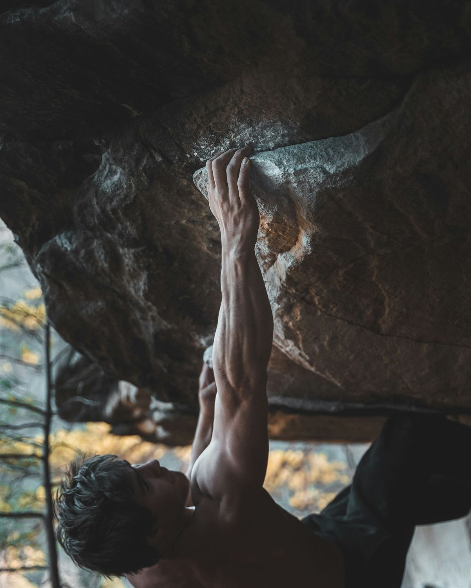

Спорт и здоровье
Быстрее. Выше. Сильнее.
Понятные советы о питании, тренировках и сне — на основе рекомендаций ВОЗ и научных данных. Плюс калькуляторы и практики, которые работают прямо в браузере.

Главное в цифрах
Четыре ориентира на каждый день
Рекомендации Всемирной организации здравоохранения для взрослых: запомнить легко, выполнять — ещё проще.
- 150мин умеренной активности в неделю — минимум для взрослых
- 400г овощей и фруктов в день, не считая картофеля
- 25г клетчатки в день — из цельных злаков, бобовых, овощей
- 5г соли в день — это потолок, а не цель
Совет дня
Поставьте бутылку воды на рабочий стол — пить станете чаще без всяких напоминаний.
Питание
Чистое питание для результатов
Сбалансированная тарелка, вода и белок. Простая система — стабильный прогресс.
- ½ тарелки — овощи и фрукты
- 30–35 мл воды на 1 кг веса в день
- Белок в каждом приёме пищи
Тренировки
Движение каждый день
Три опоры физической формы: выносливость, сила и подвижность.

Здоровье
Мысли, сон и стресс
Сколько нужно спать, 10 правил гигиены сна и практики, которые помогают справляться со стрессом.
Здоровые мысли и сон →
Инструменты
Посчитать и попробовать
Калькуляторы и практики внутри статей. Работают прямо в браузере и ничего никуда не отправляют.
- Калькулятор белкаСколько белка нужно именно вам
- Норма водыОриентир по жидкости на день
- Пульсовые зоныТренируйтесь с нужной интенсивностью
- Таймер растяжки10 минут мобильности с подсказками
- Калькулятор снаКогда лечь, чтобы легче встать
- Утренний чек-листШесть шагов к бодрому утру
- Список покупокПолезная корзина на неделю
- Дыхание 4–7–8Минута, чтобы успокоиться
Блог
Советы на каждый день

Вопросы
Частые вопросы
С чего начать после долгого перерыва в спорте?
С ходьбы: 10–15 минут в день в комфортном темпе, каждую неделю прибавляйте по 5 минут. Через 3–4 недели добавьте две короткие силовые тренировки с весом собственного тела. На старте регулярность важнее интенсивности.
Если у вас есть хронические заболевания или вы беременны — сначала посоветуйтесь с врачом.
Сколько воды нужно пить?
Единой нормы нет. Удобный ориентир — 30–35 мл на килограмм веса в сутки с учётом чая, супов и других напитков; в жару и в дни тренировок — больше. Признак, что воды хватает: нет жажды, а моча светло-жёлтая. Свою норму можно посчитать в калькуляторе. При болезнях сердца и почек питьевой режим определяет врач.
Можно ли есть после 18:00?
Можно. На вес влияет общее количество еды за день, а не время на часах. Но плотный ужин прямо перед сном мешает засыпанию, поэтому последний большой приём пищи лучше устроить за 2–3 часа до сна.
Нужны ли витамины и БАДы?
При разнообразном питании большинству людей добавки не нужны. Они имеют смысл при подтверждённом дефиците — например, витамина D или железа. Дефицит определяют по анализам, а дозу назначает врач: избыток некоторых витаминов тоже вреден.
Сколько нужно спать?
Взрослым — 7–9 часов, подросткам 14–17 лет — 8–10 часов, людям старше 65 — 7–8 часов. Не менее важна регулярность: ложитесь и вставайте примерно в одно время, даже в выходные.
Что лучше для похудения — кардио или силовые?
Вес снижается, когда калорий расходуется больше, чем поступает, а тренировки помогают этого добиться. Лучший результат даёт сочетание: кардио тренирует сердце и выносливость, а силовые сохраняют мышцы, которые иначе уходят вместе с весом.
Как не бросить через неделю?
Ставьте маленькие конкретные цели («три прогулки на этой неделе»), вносите тренировки в календарь и отмечайте выполненное. Пропуск — не провал: просто вернитесь к плану на следующий день.
Контакты
Свяжитесь с нами
Вопрос, идея для статьи или замечание? Напишите — ответим.
Или напишите напрямую: your-email@example.com